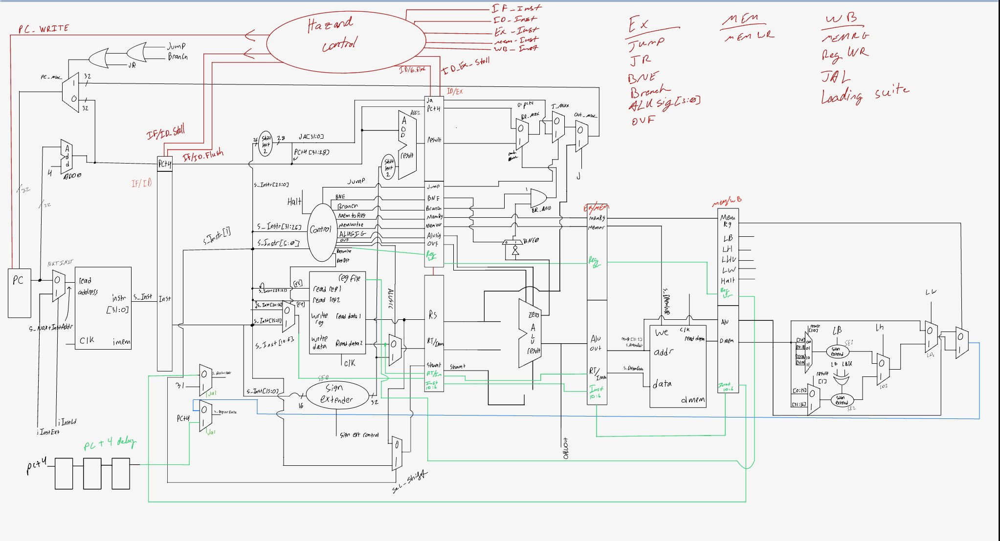

This project was a part of CPRE 381 - Comp Organization and Assembly Level Programming. This project simulated a five stage MIPS processor in VHDL. It also ran various assembly programs to test the functionality and efficiency of the processor
The project was completed in a group of two, and I was responsible for designing tests, syntheszing the processor, and writing assembly programs to test the processor. Both of us worked on various components of the process and collaborated on the design and implementation as a whole.
This course project taught me the inner workings of a MIPS processor, how to write assembly programs, and how to use VHDL for hardware description. I also strengthened my skills in reading documentation and datasheets and using GitHub for version control and collaboration in a group project.
Resources: VHDL, assembly, processor datasheets, GitHub, Quartus
Supporting documents:
